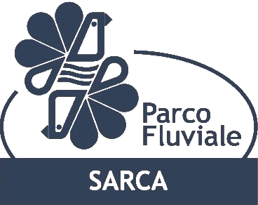

Mappa della biodiversità del Monte Brione (e dintorni)
Una semplice applicazione per navigare tra le ricchezze floro-faunistiche del Gigante, realizzata dall'Associazione per il WWF Trentino.
Realizzato grazie al contributo del Bando Maniflu -ed. 2017- promosso dal Parco Fluviale della Sarca. Il codice sorgente dell'applicazione è liberamente disponibile su GitHUb.
